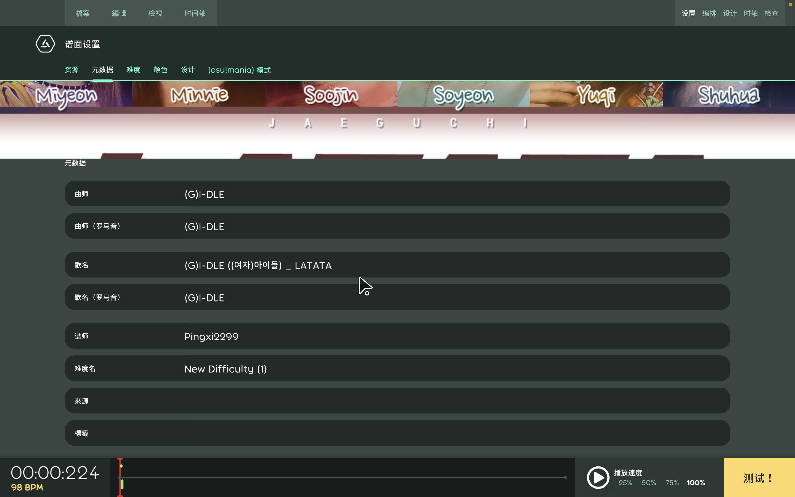
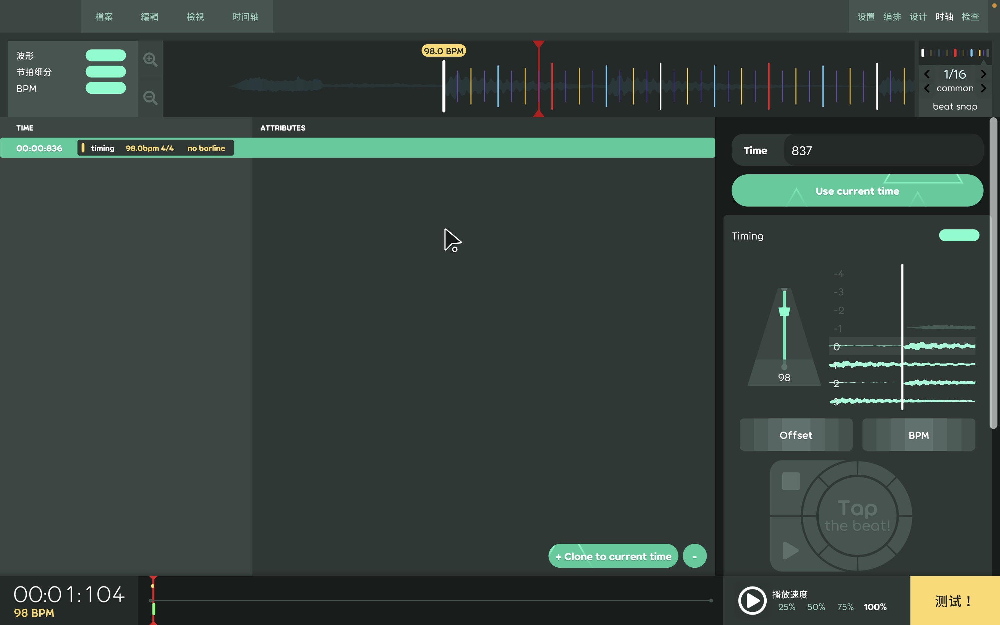
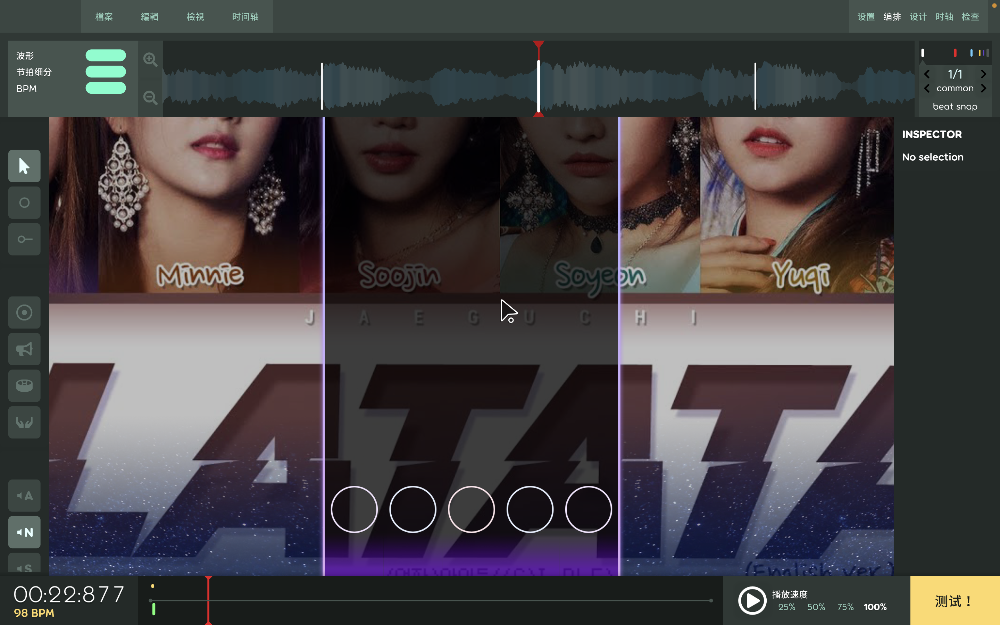
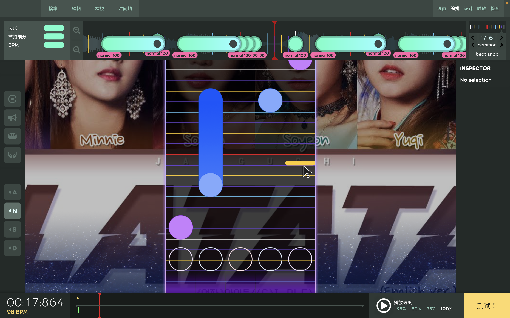

最近在家很閒，打開了塵封已久的osu
已經退圈許久了，排行榜中的歌沒有一首聽過
就只能找之前聽過的歌，或是一些新的韓團歌
最近有在聽(G)I-DLE的歌，就有在找
找到一個譜，是(G)I-DLE的LATATA
還沒玩的時候覺得很期待，在玩的時候覺得這首歌的譜不應該長這樣
所以就打算自己製譜了
來講一下製譜過程
我看網上的人好像都是用專門製譜的工具，我是直接用內建的
 首頁的編輯器
首頁的編輯器
點進去

（右上角-設置）
一進來就先設定一下
丟音樂跟背景圖片進來
我的音樂是從youtube上下載的
背景圖片是google上找的
後面就是噩夢的開始
他沒有新手教學，我只能自己摸索
這邊只會講一下我自己的方式，我也不知道對不對

找第一拍(offset)，設定bpm
bpm上網找應該都有，第一拍我是自己抓的，靠感覺抓
找到第一拍的位置，按中下的那個按鈕 “+clone to current time”
右邊介面可以調整offset跟bpm

（右上角-編排）
這邊預設就是5K，我很難過，我還在尋找方法中
歐歐，然後有節拍才可以放note跟hold
音軌旁邊可以調整節奏 (beat snap)
common可以調整成 1/1, 1/2, 1/4, 1/8, 1/16
triplets可以調整成1/3, 1/6, 1/9, 1/12
大概就是每條白線為一拍，調整節奏可以細分拍子，最多可以細分到1/16拍

我自己覺得最重要的一點就是，有節拍線的地方才可以放note跟hold
所以你的offset跟bpm一定要正確
這些都調好弄懂後就可以開始製譜啦
我在放note的時候會先研究歌的節奏、重音、鼓點跟歌詞
我是直接用聽的＋看音軌，但我覺得也可以看樂器的譜（？
然後設計note跟hold要怎麼配置
以上，是lazer版本的編輯器
lazer製作出來的譜不能上傳到網路上
我打算等它慢慢更新我再丟到網路上